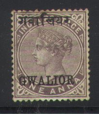
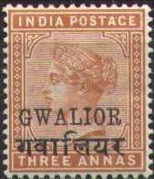
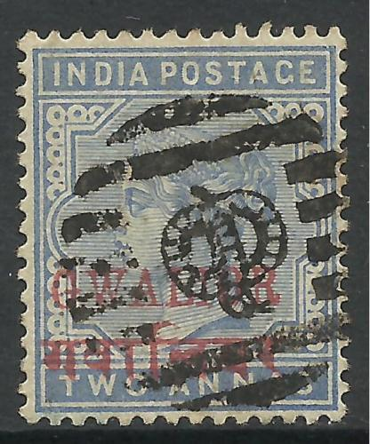
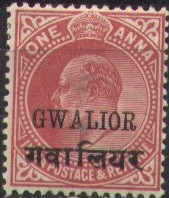
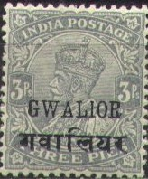
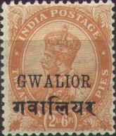
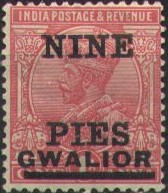
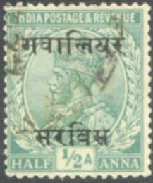
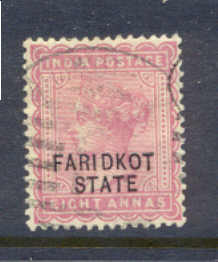

Forged stamps of India with forged "GWALIOR" overprints. The 1 R might be an Oneglia forgery
Note: on my website many of the
pictures can not be seen! They are of course present in the
catalogue;
contact me if you want to purchase it.

1/2 a green 1 a brown 1 a 6 p brown 2 a blue 4 a green 6 a brown 8 a lilac 1 R grey
These stamps have watermark 'Star', except for the values 4 a and 6 a, which have watermark 'Elephant head'.
Value of the stamps |
|||
vc = very common c = common * = not so common ** = uncommon |
*** = very uncommon R = rare RR = very rare RRR = extremely rare |
||
| Value | Unused | Used | Remarks |
| 1/2 a | RR | RR | |
| 1 a | RR | RR | |
| 1 a 6 p | RR | RR | |
| 2 a | RR | R | |
| 4 a | RR | RR | |
| 6 a | RR | RR | |
| 8 a | RR | RR | |
| 1 R | RR | RR | |
Forged stamps of India with forged "GWALIOR"
overprints. The 1 R might be an Oneglia
forgery

Forged overprint on genuine India stamp. This might be an Oneglia forgery

3 p red (1899) 3 p grey (1901) 1/2 a green 1/2 a green (overprint red) 9 p red 1 a brown 1 a red 1 a 6 p brown 2 a blue 2 a blue (overprint red) 2 a violet 2 a 6 p green 2 a 6 p blue 3 a orange 4 a green (overprint red) 4 a green 6 a brown 8 a lilac 12 a lilac on red 1 R grey (overprint red) 1 R grey 1 R red and green Larger size
2 R brown and red 3 R green and brown 5 R violet and blue
Value of the stamps |
|||
vc = very common c = common * = not so common ** = uncommon |
*** = very uncommon R = rare RR = very rare RRR = extremely rare |
||
| Value | Unused | Used | Remarks |
| 3 p red | * | * | |
| 3 p grey | RR | RR | |
| 1/2 a | * | * | |
| 1/2 a | ** | * | Overprint red Two shades of green |
| 9 p | RR | RR | |
| 1 a brown | ** | * | |
| 1 a red | * | * | |
| 1 a 6 p | * | * | |
| 2 a blue | ** | * | |
| 2 a blue | R | R | Red overprint |
| 2 a violet | ** | ** | |
| 2 a 6 p green | *** | *** | |
| 2 a 6 p blue | *** | *** | |
| 3 a | ** | ** | |
| 4 a | RR | RR | Red overprint |
| 4 a | *** | * | |
| 6 a | *** | *** | |
| 8 a | *** | *** | |
| 12 a | *** | *** | |
| 1 R grey | *** | *** | |
| 1 R grey | R | R | Red overprint |
| 1 R red and green | *** | *** | |
| 2 R | R | *** | |
| 3 R | RR | *** | |
| 5 R | RR | R | |

A typical cancel with a snake in a bar pattern.
This overprint was forged by the forger Francois Fournier (even in three types, images can be found in 'The Fournier Album of Philatelic Forgeries'). A cancel "GWALIOR-STATE 7 CC. 01 * ASAR *" was also forged by him. If anybody has more information, please contact me!
Forged Fournier overprints taken from a 'Fournier Album' (reduced
size)
Forged Gwalior cancel and other forged India cancels made by
Fournier.
The forger Sperati made a forgery of the 9 p value, by bleaching out the design of a cheaper stamp and retaining the "GWALIOR" overprint. He then printed his forged 9 p design on it. This forgery has a red dot in the right hand side leg of the "A" of "INDIA".
Sperati forgery

3 p grey 1/2 a green (Postage) 1/2 a green (Postage & Revenue) 1 a red (Postage) 1 a red (Postage & Revenue) 2 a violet 2 a 6 p blue 3 a orange 4 a olive 6 a yellow 8 a lilac 12 a lilac on red 1 R red and green Larger size
2 R brown and red 3 R green and brown 5 R violet and blue
Value of the stamps |
|||
vc = very common c = common * = not so common ** = uncommon |
*** = very uncommon R = rare RR = very rare RRR = extremely rare |
||
| Value | Unused | Used | Remarks |
| 3 p grey | c | c | |
| 1/2 a | * | * | Postage |
| 1/2 a | * | * | Postage & Revenue |
| 1 a | * | * | Postage |
| 1 a | * | * | Postage & Revenue |
| 2 a | ** | * | |
| 2 a 6 p | *** | *** | |
| 3 a | ** | * | |
| 4 a | *** | * | |
| 6 a | *** | ** | |
| 8 a | *** | ** | |
| 12 a | *** | *** | |
| 1 R | *** | *** | |
| 2 R | R | R | |
| 3 R | RR | RR | |
| 5 R | RR | RR | |


3 p grey 1/2 a green (Postage & Revenue) 1/2 a green (Postage) 1 a red 1 a brown 1 a 3 p lilac 1 1/2 a red 2 a violet (Postage & Revenue) 2 a violet (Postage) 2 a 6 p blue 2 a 6 p orange 3 a orange 3 a blue 4 a olive (Postage & Revenue) 4 a olive (Postage) 6 a yellow 8 a lilac 12 a red Larger size
1 R green and brown 2 R brown and red 5 R violet and blue 10 R red and green 15 R olive and blue 25 R blue and orange
Forged oveprints.
After 1920 several other stamps were issued. Examples:

3 p red 3 p grey 1/2 a green 1 a brown 1 a red 2 a blue 2 a violet 4 a green 8 a lilac 1 R red and green
Value of the stamps |
|||
vc = very common c = common * = not so common ** = uncommon |
*** = very uncommon R = rare RR = very rare RRR = extremely rare |
||
| Value | Unused | Used | Remarks |
| 3 p red | ** | * | |
| 3 p grey | * | * | |
| 1/2 a | * | c | |
| 1 a brown | * | c | |
| 1 a red | ** | * | |
| 2 a blue | ** | * | |
| 2 a violet | ** | ** | |
| 4 a | ** | ** | |
| 8 a | *** | *** | |
| 1 R | *** | *** | |
This overprint was forged by the forger Francois Fournier (even in two types, images can be found in 'The Fournier Album of Philatelic Forgeries'). A cancel "GWALIOR-STATE 7 CC. 01 * ASAR *" was also forged by him. If anybody has more information, please contact me!
Forged Fournier overprints taken from a 'Fournier Album' (reduced
size)

3 p grey 1/2 a green (2 types; 'Postage' or 'Postage&Revenue') 1 a red (2 types; 'Postage' or 'Postage&Revenue') 2 a violet 4 a olive 8 a lilac 1 R red and green
Value of the stamps |
|||
vc = very common c = common * = not so common ** = uncommon |
*** = very uncommon R = rare RR = very rare RRR = extremely rare |
||
| Value | Unused | Used | Remarks |
| 3 p | * | c | |
| 1/2 a | * | c | Both types |
| 1 a | * | c | 'Postage&Revenue: * |
| 2 a | ** | * | |
| 4 a | *** | * | |
| 8 a | *** | ** | |
| 1 R | *** | *** | |

3 p grey 1/2 a green 1 a red 2 a violet 4 a olive 8 a lilac 1 R green and brown
After 1920 several other stamps were issued. Examples:
2 Rs stamp with larger overprint
Gwalior issued many fiscal stamps, I've seen many with the face of the local ruler. The first one was issued in 1906 (1 a green):

"GWALIOR STATE" 1 a green, revenue stamp, issued in
1906.

3 p red (1900) 1/2 a green 1 a brown 2 a blue 3 a orange 4 a olive 6 a brown 8 a lilac 12 a lilac on red (1900) 1 R grey 1 R red and green (1893)
Value of the stamps |
|||
vc = very common c = common * = not so common ** = uncommon |
*** = very uncommon R = rare RR = very rare RRR = extremely rare |
||
| Value | Unused | Used | Remarks |
| 3 p | *** | *** | |
| 1/2 a | * | * | |
| 1 a | ** | ** | |
| 2 a | *** | *** | |
| 3 a | *** | *** | |
| 4 a | *** | *** | |
| 6 a | *** | *** | |
| 8 a | R | R | |
| 12 a | RR | RR | |
| 1 R grey | RR | RR | |
| 1 R red and green | RR | RR | |
Forged Faridkot overprints.
This overprint was forged by the forger Francois Fournier (even in two types, images can be found in 'The Fournier Album of Philatelic Forgeries'). If anybody has more information, please contact me!
Forged Fournier overprints taken from a 'Fournier Album' (reduced
size)
1/2 a green 1 a brown 2 a blue 3 a orange 4 a green 6 a brown 8 a lilac 1 R grey 1 R red and green
Value of the stamps |
|||
vc = very common c = common * = not so common ** = uncommon |
*** = very uncommon R = rare RR = very rare RRR = extremely rare |
||
| Value | Unused | Used | Remarks |
| 1/2 a | ** | ** | |
| 1 a | ** | ** | |
| 2 a | *** | *** | |
| 3 a | *** | *** | |
| 4 a | *** | *** | |
| 6 a | R | R | |
| 8 a | *** | *** | |
| 1 R grey | RR | RR | |
| 1 R red and green | RR | RR | |
This overprint was forged by the forger Francois Fournier (an image can be found in 'The Fournier Album of Philatelic Forgeries'). If anybody has more information, please contact me!
Forged Fournier overprints taken from a 'Fournier Album' (reduced
size)

Primitive forgery, most likely made by the stam forger Oneglia
Postcards of India overprinted with "FARIDKOT STATE" and arms, example:
(reduced size)
{kind=link}